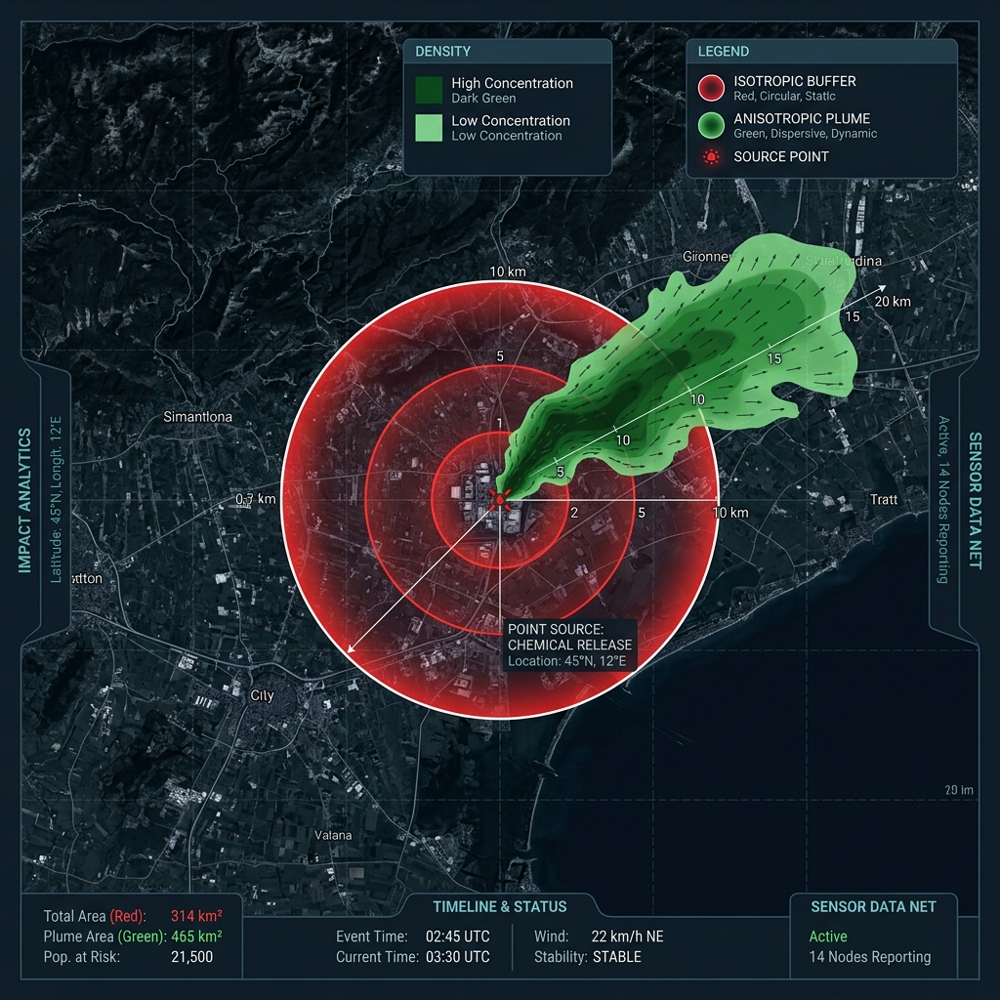

Map Action Impact Engine — Évaluation de la logique de propagation spatiale
Ce simulateur reproduit le comportement exact du code Python du fichier impact_logic.py. Modifiez les curseurs et vecteurs pour visualiser les changements de rayon en temps réel.
Afin d'éviter tout malentendu lors de l'évaluation du système par des experts de l'environnement, il est primordial de positionner correctement la méthodologie mathématique utilisée.
Le moteur d'impact est un Modèle Opérationnel d'Évaluation Rapide (Rapid Screening Model). Il n'a pas été conçu pour modéliser précisément des fluides ou des dynamiques chimiques locales, mais pour estimer en temps réel des ordres de grandeur opérationnels pour la gestion d'urgence.

| Caractéristiques du Moteur Map Action | Éléments de Modélisation Rigoureuse |
|---|---|
|
Traitement en temps réel (< 2 secondes) Calculs ultra-légers basés sur des règles géométriques simples pour une réactivité optimale sur le terrain. |
Calculs lourds (heures / jours) Résolution d'équations différentielles de Navier-Stokes pour l'hydrodynamique ou de modèles d'advection-diffusion. |
|
Zones d'impact isotropes (circulaires) Par précaution opérationnelle, le rayon d'impact dessine un cercle parfait autour du point d'origine. |
Formes anisotropes complexes (panaches) Modélisation directionnelle de la dispersion (ex: panache d'odeur elliptique influencé par la rose des vents). |
|
Hybridation Déterministe + IA L'IA segmente l'image pour estimer la taille visible et les vecteurs de propagation, mais le calcul est purement mathématique (zéro hallucination). |
Données physiques complètes Nécessite des paramètres géotechniques précis (porosité du sol, coefficient d'absorption des polluants, rugosité de surface). |
Le modèle s'appuie sur cinq vecteurs environnementaux distincts. Voici leur implémentation technique dans le code Python d'impact_logic.py, leur degré de validité scientifique et leurs limites.
Le transport des particules et fumées est lié de manière proportionnelle à la vitesse moyenne du vent. Le principe d'étendre la zone à risque si le vent forcit est cohérent.
Le coefficient 10.0 est une heuristique empirique. De plus, le vent disperse les matières de manière directionnelle (downwind), et non dans toutes les directions (cercle).
Le ruissellement de l'eau est modélisé comme une fonction directe de la pente et des précipitations (physique de l'écoulement gravitaire superficiel).
L'écoulement se fait suivant les lignes de plus grande pente (talwegs). Le modèle le place dans un rayon étendu, sans suivre le réseau hydrographique.
L'instabilité gravitaire augmente avec l'inclinaison. Une pente élevée favorise la vitesse de propagation des débris en cas de glissement de terrain.
Les glissements réels dépendent d'un seuil critique non linéaire (angle de talus naturel, saturation hydrique) et non d'une multiplication linéaire constante.
200m correspond au rayon d'action écologique (home range) typique autour des gîtes larvaires pour de nombreuses espèces de moustiques (Aedes aegypti).
Le rayon d'action est statique et n'évolue pas en fonction des facteurs temporels (saison des pluies, température) propices à la reproduction.
Le calcul du Score d'Impact Global s'appuie sur une méthode éprouvée en sciences de l'environnement : l'agrégation pondérée de critères hétérogènes (sévérité intrinsèque, vulnérabilité sociale et sensibilité du milieu).
Pour présenter ce projet devant vos collègues environnementalistes, voici les fiches de langage recommandées ainsi que les axes d'évolution futurs.
"C'est une simulation de la propagation physique des polluants."
"C'est une enveloppe de vigilance cartographique instantanée."
"L'algorithme a découvert des constantes physiques de dispersion."
"Ce sont des règles empiriques d'urgence validées opérationnellement."